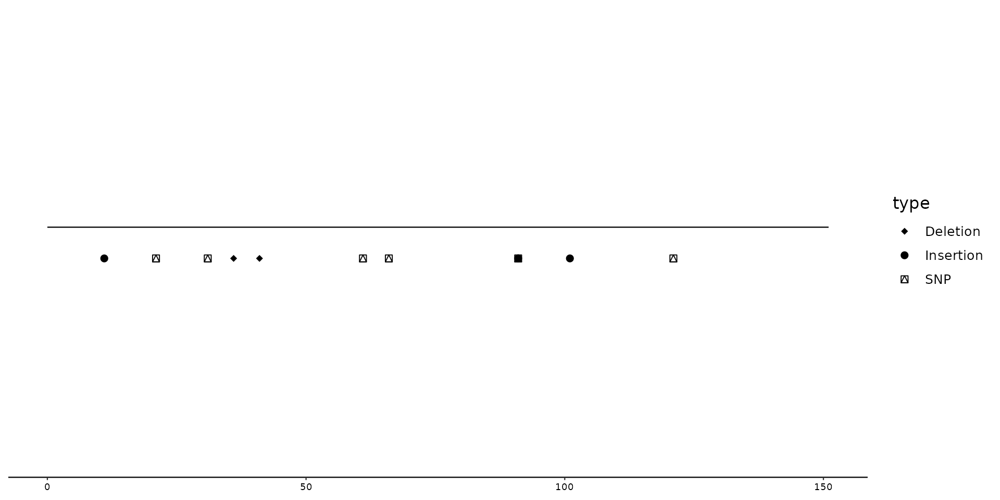
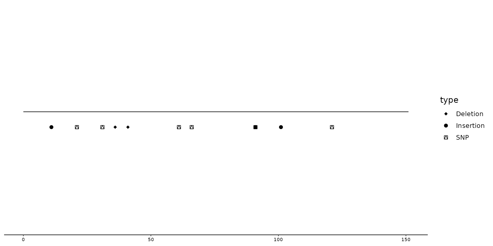
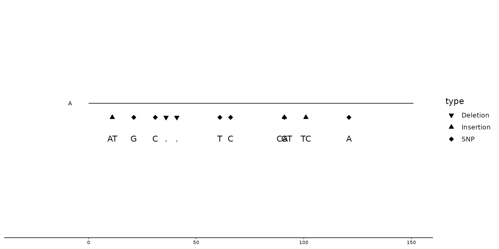
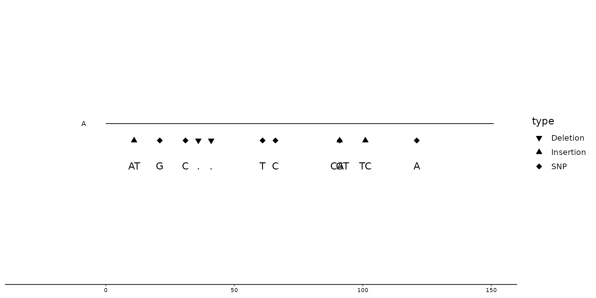

The user can call upon an convenient function called scale_color_variant,
which changes the color of (SNP) points, based on their nucleotides (A, C, G, T).
By default the function uses a colorblind friendly palette, but users can manually overwrite these colors.
(Within the plotting function (e.g. geom_variant), coloring of the column should still be mentioned (aes(color = ...)).
The function scale_shape_variant changes the shape of plotted points based on the type of mutation.
The user can also manually decide which shape, each specific type of mutation should have.
By default, SNPs are diamond shaped, Deletions triangle downwards and Insertions triangle upwards.
(These default settings make most sense when using geom_variant(offset = -0.2)).
(User should still manually call which column is used for the shape aesthetic)
Arguments
- values
A vector indicating how to color/shape different variables. The functions
scale_color_variant()andscale_shape_variant()have a default setting, which can be overwritten.- na.value
The aesthetic value (color/shape/etc.) to use for non matching values.
- characters
When
TRUE, it changes the default shapes ofscale_shape_variant()to become the letters of the nucleotides.
Examples
# Creation of example data.
testposition <- tibble(
type = c("Insertion", "SNP", "SNP", "Deletion", "Deletion", "SNP", "SNP", "Insertion", "SNP", "Insertion", "SNP"),
start = c(10, 20, 30, 35, 40, 60, 65, 90, 90, 100, 120),
ALT = c("AT", "G", "C", ".", ".", "T", "C", "CAT", "G", "TC", "A"),
REF = c("A", "T", "G", "A", "A", "G", "A", "C", "A", "T", "G"),
end = start + 1,
seq_id = c(rep("A", 11)))
testseq <- tibble(
seq_id = "A",
start = 0,
end = 150,
length = end-start)
p1 <- gggenomes(seqs=testseq, feats=testposition)
p2 <- p1 + geom_seq()
## Scale_color_variant()
# Changing the color aesthetics in geom_variant: colors all mutations
# (In this example, All ALT (alternative) nucleotides are being colored)
p1 + geom_variant(aes(color=ALT))
 # Color all SNPs with default colors using scale_color_variant().
#(SNPs are 1 nucleotide long, other mutations such as Insertions and Deletions have either more ore less nucleotides within the ALT column and are thus not plotted)
p1 + geom_variant(aes(color=ALT)) +
scale_color_variant()
# Color all SNPs with default colors using scale_color_variant().
#(SNPs are 1 nucleotide long, other mutations such as Insertions and Deletions have either more ore less nucleotides within the ALT column and are thus not plotted)
p1 + geom_variant(aes(color=ALT)) +
scale_color_variant()
 # Manually changing colors with scale_color_variant()
p1 + geom_variant(aes(color=ALT)) +
scale_color_variant(values = c(A="purple", T="darkred", TC="black", AT="pink"))
# Manually changing colors with scale_color_variant()
p1 + geom_variant(aes(color=ALT)) +
scale_color_variant(values = c(A="purple", T="darkred", TC="black", AT="pink"))
 ## Scale_shape_variant()
# Changing the `shape` aesthetics in geom_variant
p2 + geom_variant(aes(shape=type), offset = -0.1)
## Scale_shape_variant()
# Changing the `shape` aesthetics in geom_variant
p2 + geom_variant(aes(shape=type), offset = -0.1)
 # Calling upon scale_shape_variant() to change shapes
p2 + geom_variant(aes(shape=type), offset = -0.1) +
scale_shape_variant()
# Calling upon scale_shape_variant() to change shapes
p2 + geom_variant(aes(shape=type), offset = -0.1) +
scale_shape_variant()
 # Manually changing shapes with scale_shape_variant()
p2 + geom_variant(aes(shape=type), offset = -0.1) +
scale_shape_variant(values=c(SNP=14, Deletion=18, Insertion=21))

# Plotting (nucleotides) characters instead of shapes
p2 + geom_variant(aes(shape=ALT), offset = -0.1, size=3)+
scale_shape_variant(characters=TRUE)
#> Warning: Removed 5 rows containing missing values (`geom_variant()`).
# Manually changing shapes with scale_shape_variant()
p2 + geom_variant(aes(shape=type), offset = -0.1) +
scale_shape_variant(values=c(SNP=14, Deletion=18, Insertion=21))

# Plotting (nucleotides) characters instead of shapes
p2 + geom_variant(aes(shape=ALT), offset = -0.1, size=3)+
scale_shape_variant(characters=TRUE)
#> Warning: Removed 5 rows containing missing values (`geom_variant()`).
 # Alternative way to plot nucleotides (of ALT) by using `geom=text` within `geom_variant()`
gggenomes(seqs=s1, feats=f1) +
geom_seq() +
geom_variant(aes(shape=type), offset=-0.1) +
scale_shape_variant() +
geom_variant(aes(label=ALT), geom="text", offset=-0.25) +
geom_bin_label()
#> Error in as_tracks(feats, feats_exprs, c("seqs", names2(genes)), context = "feats"): object 'f1' not found
# Combining scale_color_variant() and scale_shape_variant()
p2 + geom_variant(aes(shape=ALT, color = ALT), offset = -0.1, size = 3, show.legend=FALSE) +
geom_variant(aes(color=ALT)) +
scale_color_variant(na.value = "black") +
scale_shape_variant(characters=TRUE)
#> Warning: Removed 5 rows containing missing values (`geom_variant()`).

# Alternative way to plot nucleotides (of ALT) by using `geom=text` within `geom_variant()`
gggenomes(seqs=s1, feats=f1) +
geom_seq() +
geom_variant(aes(shape=type), offset=-0.1) +
scale_shape_variant() +
geom_variant(aes(label=ALT), geom="text", offset=-0.25) +
geom_bin_label()
#> Error in as_tracks(feats, feats_exprs, c("seqs", names2(genes)), context = "feats"): object 'f1' not found
# Combining scale_color_variant() and scale_shape_variant()
p2 + geom_variant(aes(shape=ALT, color = ALT), offset = -0.1, size = 3, show.legend=FALSE) +
geom_variant(aes(color=ALT)) +
scale_color_variant(na.value = "black") +
scale_shape_variant(characters=TRUE)
#> Warning: Removed 5 rows containing missing values (`geom_variant()`).
